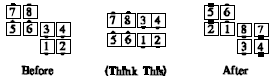
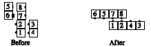

Dancers arranged as shown on the left act as though they are in columns or lines and do the call, ending back on the same offset spots.
Offset Lines, Couples Circulate:

From the 3x4 style of Offset Lines, a call that rotates the 2x4 formation (e.g. Bend The Line), finishes in a parallelogram. For example: Offset Lines, Bend the Line:

© Copyright 1983, 1986-1988, 1995-2011 Bill Davis, John Sybalsky and CALLERLAB Inc., The International Association of Square Dance Callers. Permission to reprint, republish, and create derivative works without royalty is hereby granted, provided this notice appears. Publication on the Internet of derivative works without royalty is hereby granted provided this notice appears. Permission to quote parts or all of this document without royalty is hereby granted, provided this notice is included. Information contained herein shall not be changed nor revised in any derivation or publication.